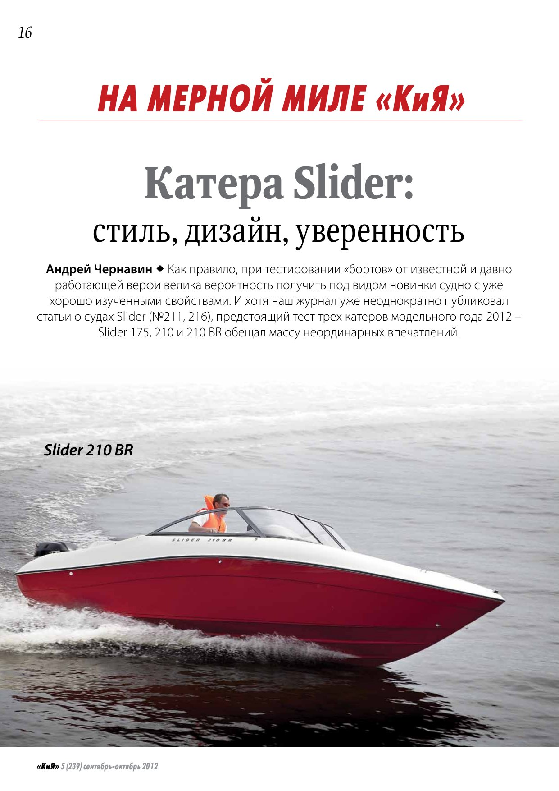
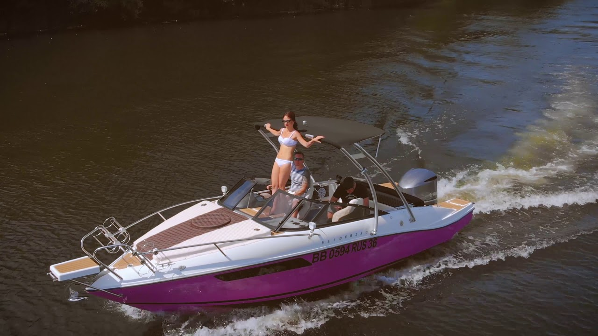
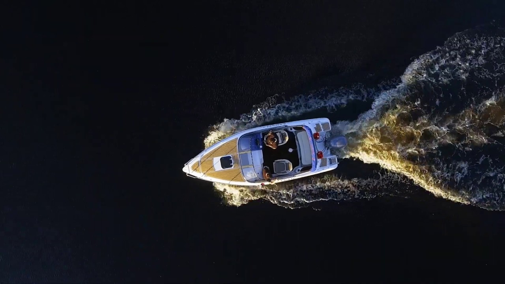
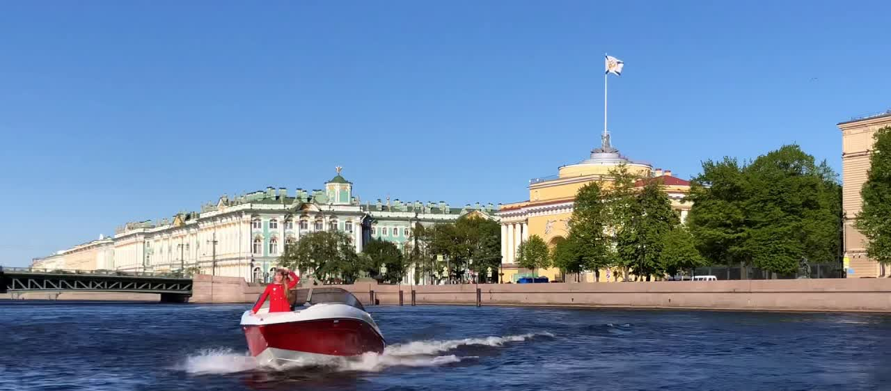

Журнал замерял скорость на мерной миле, владельцы снимают свои сезоны, катера стоят на выставках рядом с конкурентами.

Читать тест · PDF«Ни одна заклёпка и ни один саморез не видны снаружи»
Андрей Чернавин, «Катера и Яхты», №5 (239), 2012. Тест Slider 175, 210 и 210 BR

«Делали-делали и доделали нашу красавицу! Ура!»
Юрий · Slider 230
«Жил на лодке почти целый сезон, чувствовал себя комфортно»
Александр Х. · Slider 210
«Безупречно ведёт себя на воде, даже при наличии волн»
Компания «На катере СПб» · Slider 210 BR